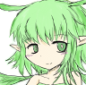
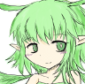

Once in the hub location. In the company of immortal fairies and a black rabbit. We are greeted by the fairy Leaf. A new golden-haired, smiling friend brings us up to speed on the world. An incomprehensible fog fills the fairy kingdom turning all the weak of heart into demons. Weakness is not only determined by the strength of the character himself. By lore or game mechanics. But also by the mental state at the moment. Some trigger to fixate on an idea is enough for the fog to turn you. And since all fairy tale characters are often the embodiment of an idea. They're vulnerable to this fog very much. And that's why some are turned into demons by what they are. And the origin of the demon princess Cinderella. Whose motive is unknown to anyone, but clearly for something bad. And now we have to get to her. Along the way, collect the souls of 4 other demon princesses to enter Cinderella's castle. These are Princess Frog that is stuck in her swamp, Princess Rapunzel that sits in her tower, Princess Mermaid that lives in the flooded city of Atlantis and Princess Snow White that lives in her cold castle of ice. But to be fair, it is worth noting that not always the meeting with the princesses should end with a mutual exchange of kidney stabs. But the option to end this encounter peacefully. They're demons, though, so why not? Here's the deal. To get into Cinderella's Castle, you don't need the souls of the princesses themselves, but their rings. Clever Cinderella made it so that all four rings are needed to get into the castle. And the princesses, because of their own pride, will never work together. Which makes it impossible to get all the rings peacefully, for example. Because one of the princesses will ask to kill the other two before giving up her ring. And another one will ask for one of the companions in exchange for the ring. But that's not our way. We raised our companions, we taught them to cook, we washed our plates together. So there's no peaceful solution here. And the game doesn't offer deception as an option. And in a filigree move, Cinderella has secured herself from the other princesses. And now to get to her, we need to collect all four rings. Which by the way can be worn and which have strong effects that greatly help in the course of the game. And we get them after the marriage ceremony....Yes, you got it right. For each princess we have to fulfill a certain task. After that there will be a ceremony and we will get the ring. Getting the ring of the frog princess is the easiest. It gives the character a chance to in flict some kind of ailment on the enemy when attacking with a 50% chance. And to get it you just have to come and kiss the princess. And then you become her husband and prince number 346..... Uh-huh. You just have to deal with it. The mermaid princess. To get to her. In the tower of Rapunzel must find an invitation. After all, without it before the player as before Moses water will not separate, and he will not be able to descend to the sunken Atlantis. There in his castle will be waiting for us our princess. And this time, to realize that before us a demon will be a little easier. Because she'll ask us to sacrifice one of her companions. And she'll only ask for the companion who's the most powerful. And if we agree to that, the princess will eat that companion. Yeah, we're basically just giving her a snack. Of course, there's the option of giving her Leaf. I mean, she's a fairy, and they're immortal. But that's just not our way. So we grab a knife and go make ourselves some sushi for dinner. I'm not gonna tell you about the ring. Because by that point, the significance of everyone individually isn't that great. The local three piggies kept their own ranch where they raised all sorts of animals at the whim of Princess Rapunzel. Until a wolf got to them. And until the ranch was overrun by a group of animals. Calling themselves the Bremen Musicians. Lore of this world in a couple of strikes with its thoughtfulness and interconnection of different fairy tale creatures. This is by the way almost the very first location where we can get. And where we still meet one of the companions. But I will not talk about it now. I'll only say that she's pulling the same scam with us as one of the beetles from Hollow Knight. That's a nice touch. It may seem like I'm talking too much about the world here, rather than the character of Leaf. And yes, it is. And there's a reason for that. Leaf is our most starter and most loyal companion. We meet her at every campfire. And she always has something to say about every place that is new to us. And she's also "Data Deleted" and "Data Deleted." So there's not much I can say about her right now. But I'll definitely be talking about her next. And now back to Rapunzel. On the way to her we pass a cave where we meet another animal for the princess named "Hippo". We have to kill it. Which probably should have upset the princess. But she immediately finds a new one in the form of the main character.
Tale of black soul
Text
 
